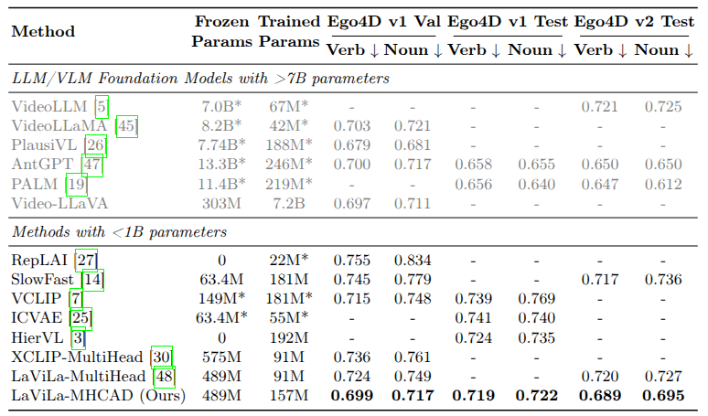
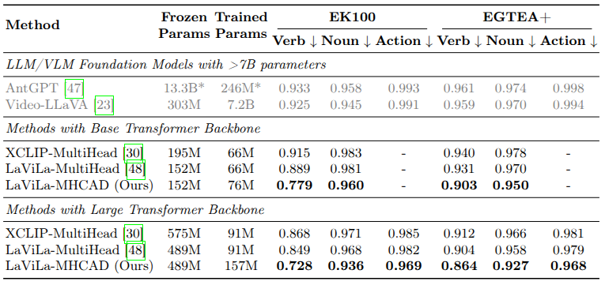
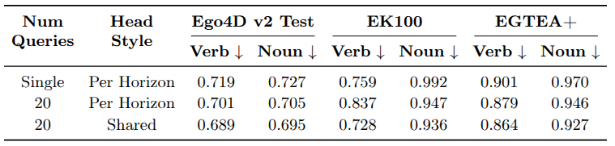
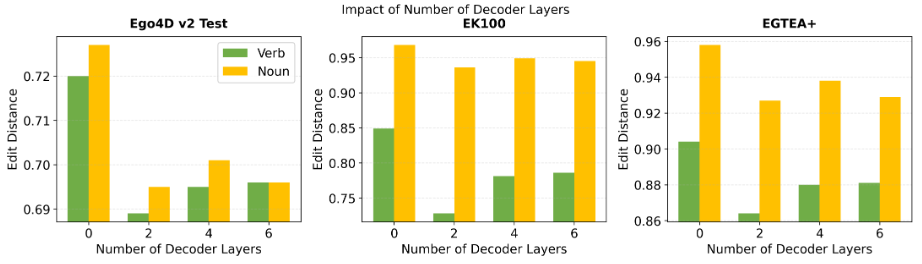
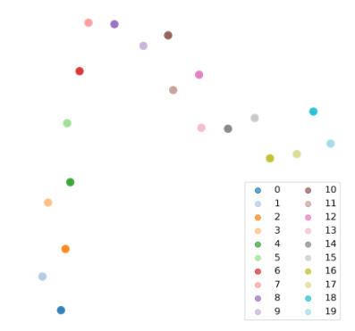

Open-Vocabulary Long Term Action Anticipation
Abstract
Action anticipation, i.e., predicting future actions from past video observations, is fundamental to intelligent systems that assist humans. Despite progress in model architectures, current evaluation practices exhibit critical limitations: methods evaluate exclusively in closed-set settings where the training and test action vocabularies are identical, thereby preventing an understanding of generalization to novel action classes encountered in real-world deployment. We therefore introduce the first open-vocabulary evaluation framework for action anticipation, where models are trained on one egocentric dataset and tested on entirely different egocentric datasets with novel action vocabularies. Since our thorough evaluation shows that adapting existing approaches to this task is insufficient, we propose a novel approach that employs horizon-specific learnable queries and a lightweight text encoder adaptation for open-vocabulary long-term action anticipation. It substantially outperforms other approaches that we have adapted to this task.

Closed-set on Ego4D. Best among sub-1B methods, and on par with models using 7B or more parameters (greyed).

Open-vocabulary on EK100 and EGTEA+. Trained on Ego4D only, no fine-tuning. We beat every baseline at both backbone sizes.

Horizon-specific queries with shared heads win. Separate heads hurt open-vocabulary transfer.

Two decoder layers are optimal. No decoder is much worse, and deeper degrades.

Cross-attention of the 20 horizon queries, t-SNE projected. Queries trace a path from near to distant future. This ordering is never supervised.
Poster
BibTeX
@inproceedings{wasim2026openVocabAnt,
title={Open-Vocabulary Long-term Action Anticipation},
author={Syed Talal Wasim and Jinhui Yi and Hamid Suleman and Ahmad Javed and Yanan Luo and Muzammal Naseer and Juergen Gall},
booktitle={ECCV}
year={2026}
}